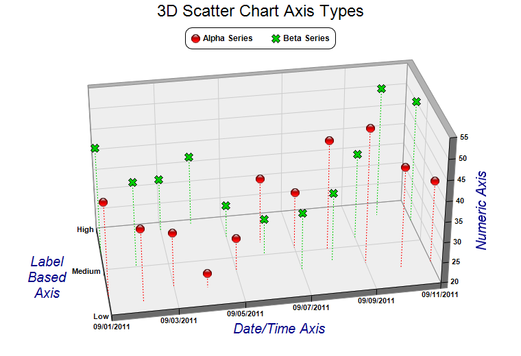

This example demonstrates different axis scale types for the 3D scatter charts. It also demonstrates using different symbol shapes.
Like an
XYChart, in a
ThreeDScatterChart, the axis scale can represent numbers, date/time or labels. In this example, the x-axis uses a date/time scale, the y-axis uses a label based scale, and the z-axis uses a numeric scale.
The following is the command line version of the code in "cppdemo/threedscatteraxis". The MFC version of the code is in "mfcdemo/mfcdemo". The Qt Widgets version of the code is in "qtdemo/qtdemo". The QML/Qt Quick version of the code is in "qmldemo/qmldemo".
#include "chartdir.h"
int main(int argc, char *argv[])
{
// The x coordinates for the 2 scatter groups
double dataX[] = {Chart::chartTime(2011, 9, 1), Chart::chartTime(2011, 9, 2), Chart::chartTime(
2011, 9, 3), Chart::chartTime(2011, 9, 4), Chart::chartTime(2011, 9, 5), Chart::chartTime(
2011, 9, 6), Chart::chartTime(2011, 9, 7), Chart::chartTime(2011, 9, 8), Chart::chartTime(
2011, 9, 9), Chart::chartTime(2011, 9, 10), Chart::chartTime(2011, 9, 11)};
const int dataX_size = (int)(sizeof(dataX)/sizeof(*dataX));
// The y and z coordinates for the first scatter group
double dataY0[] = {0.4, 0.2, 0.5, 0.4, 0.7, 1.3, 1.1, 1.0, 0.6, 0.4, 0.5};
const int dataY0_size = (int)(sizeof(dataY0)/sizeof(*dataY0));
double dataZ0[] = {43, 38, 33, 23.4, 28, 36, 34, 47, 53, 45, 40};
const int dataZ0_size = (int)(sizeof(dataZ0)/sizeof(*dataZ0));
// The y and z coordinates for the second scatter group
double dataY1[] = {1.4, 1.0, 1.8, 1.9, 1.5, 1.0, 0.6, 0.7, 1.2, 1.7, 1.5};
const int dataY1_size = (int)(sizeof(dataY1)/sizeof(*dataY1));
double dataZ1[] = {46, 41, 33, 37, 28, 29, 34, 37, 41, 52, 50};
const int dataZ1_size = (int)(sizeof(dataZ1)/sizeof(*dataZ1));
// Instead of displaying numeric values, labels are used for the y-axis
const char* labelsY[] = {"Low", "Medium", "High"};
const int labelsY_size = (int)(sizeof(labelsY)/sizeof(*labelsY));
// Create a ThreeDScatterChart object of size 760 x 520 pixels
ThreeDScatterChart* c = new ThreeDScatterChart(760, 520);
// Add a title to the chart using 18 points Arial font
c->addTitle("3D Scatter Chart Axis Types", "Arial", 18);
// Set the center of the plot region at (385, 270), and set width x depth x height to 480 x 240
// x 240 pixels
c->setPlotRegion(385, 270, 480, 240, 240);
// Set the elevation and rotation angles to 30 and -10 degrees
c->setViewAngle(30, -10);
// Add a legend box at (380, 40) with horizontal layout. Use 9pt Arial Bold font.
LegendBox* b = c->addLegend(380, 40, false, "Arial Bold", 9);
b->setAlignment(Chart::TopCenter);
b->setRoundedCorners();
// Add a scatter group to the chart using 13 pixels red (ff0000) glass sphere symbols, with
// dotted drop lines
ThreeDScatterGroup* g0 = c->addScatterGroup(DoubleArray(dataX, dataX_size), DoubleArray(dataY0,
dataY0_size), DoubleArray(dataZ0, dataZ0_size), "Alpha Series", Chart::GlassSphere2Shape,
13, 0xff0000);
g0->setDropLine(c->dashLineColor(Chart::SameAsMainColor, Chart::DotLine));
// Add a scatter group to the chart using 13 pixels blue (00cc00) cross symbols, with dotted
// drop lines
ThreeDScatterGroup* g1 = c->addScatterGroup(DoubleArray(dataX, dataX_size), DoubleArray(dataY1,
dataY1_size), DoubleArray(dataZ1, dataZ1_size), "Beta Series", Chart::Cross2Shape(), 13,
0x00cc00);
g1->setDropLine(c->dashLineColor(Chart::SameAsMainColor, Chart::DotLine));
// Set x-axis tick density to 50 pixels. ChartDirector auto-scaling will use this as the
// guideline when putting ticks on the x-axis.
c->xAxis()->setTickDensity(50);
// Set the y-axis labels
c->yAxis()->setLabels(StringArray(labelsY, labelsY_size));
// Set label style to Arial bold for all axes
c->xAxis()->setLabelStyle("Arial Bold");
c->yAxis()->setLabelStyle("Arial Bold");
c->zAxis()->setLabelStyle("Arial Bold");
// Set the x, y and z axis titles using deep blue (000088) 15 points Arial font
c->xAxis()->setTitle("Date/Time Axis", "Arial Italic", 15, 0x000088);
c->yAxis()->setTitle("Label\nBased\nAxis", "Arial Italic", 15, 0x000088);
c->zAxis()->setTitle("Numeric Axis", "Arial Italic", 15, 0x000088);
// Output the chart
c->makeChart("threedscatteraxis.png");
//free up resources
delete c;
return 0;
}
© 2023 Advanced Software Engineering Limited. All rights reserved.